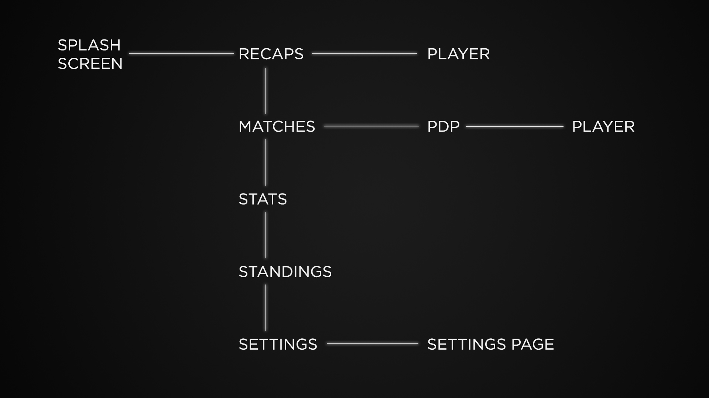
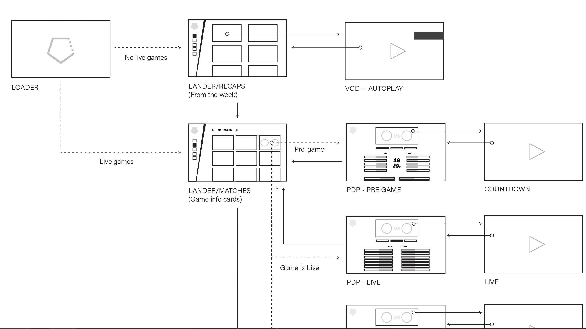
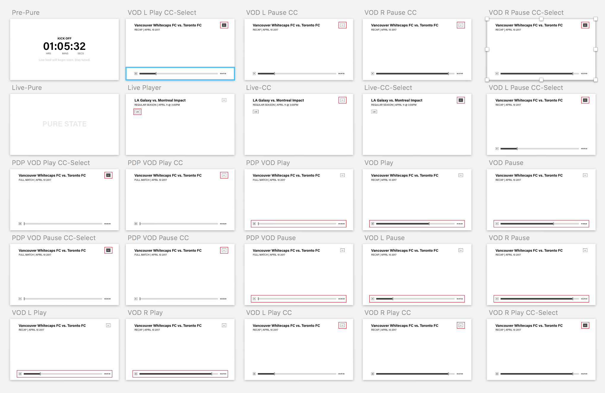
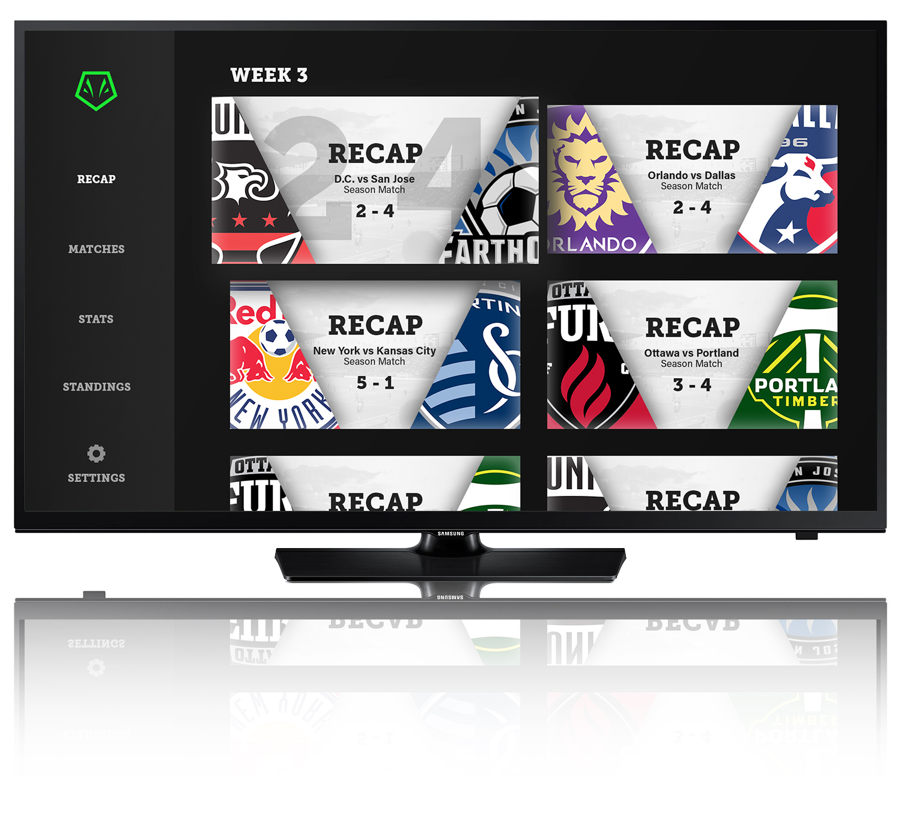

I spent 6 week working as part of a team of interns at You.i TV to create Viper League, a soccer streaming app. I worked with Ashley Murray and Kyle Jackson to bring this design from concept to a functional application. We were tasked to create an app for You.i TV's Engine One, a highly customizable app running off of their engine. We created the brand, designed the app and brought it to life.
My main focus during this time was the visual design, where I created all of the screens in Adobe Photoshop. I worked to ensure there was a consistent language throughout the entire app. I also worked on building the app in Adobe After Effects. This would allow us to export it directly to code, and into a running build of the app. This was done with the use of You.i TV's custom AE plugins.
This was a great experience and I really learned a lot about working with a team and in a proffessional space and workflow.

This is the flow of Viper League. The four main sections are Recaps, Matches, Stats and Standings. Recaps will show you just that, a recap for each game that has taken place in the past week. Matches are where you can find full games, sorted by pre-game, live game or post game. Stats will show you statistics on either players or teams, which you can switch between, and Standings will show you the which teams hold the top 5 spots.

Here is an example of what our wireframes would look live. We went through many iterations and flows to really boil down what needed to be there.

User testing with an interactive prototype was part of our design process. This reqired many screens with different states to be created.

This is a glimpse at our visual design. We chose to take our brand in a modern direction. We wanted it to look like a sports app, without having that generic sports app feel. Creating a dark ui with an accent green and bright imagry to contrast was a way to create visual interest and direct the user easily.
This is the Recaps screen. Our design used the angle you see through the app as a way to emphasise the modern feel.
This is a demo of the app in use.